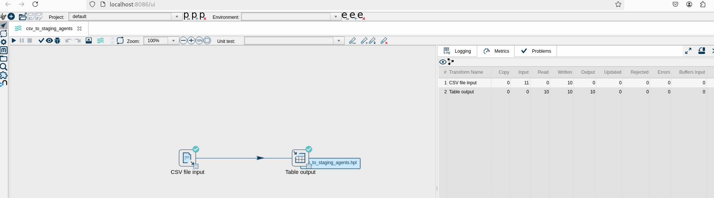

ETL – POC avec Apache Hop, MariaDB et Docker
Extraction CSV → Chargement SQL, validation et présentation du flux de données.
Apache Hop Web
MariaDB + Adminer
Docker Compose
CSV → Staging → Cible
2
Pipelines Hop
1
Base MariaDB (etl_demo)
10
Lignes de démonstration
100%
Reproductible en Docker
Contexte & objectif
Objectif : livrer un POC ETL simple et reproductible pour démontrer le principe d’un flux Extract → Transform → Load avec des outils open-source et une chaîne “prête à rejouer” sous Docker.
- Déployer rapidement un environnement Apache Hop Web, MariaDB et Adminer.
- Créer et exécuter une pipeline de base CSV → table SQL.
- Montrer la bonne pratique staging → table finale (upsert léger).
- Documenter les difficultés rencontrées et les correctifs appliqués.
Pourquoi Hop ? Interface graphique légère, exécution web, et parfaite pour illustrer l’ETL sans surcoût.
Architecture
Trois services Docker orchestrés par docker-compose :
- hopweb – Apache Hop Web (UI ETL) – :8086
- mariadb – base de données – :3307 exposé côté hôte
- adminer – SQL mini-console web – :8081
# Extrait simplifié (ports / variables / volume init.sql)
services:
mariadb:
image: mariadb:10.11
ports: ["3307:3306"]
environment:
- MARIADB_DATABASE=etl_demo
- MARIADB_USER=etl_user
- MARIADB_PASSWORD=etl_pwd
- MARIADB_ROOT_PASSWORD=root_pwd
volumes:
- ./init.sql:/docker-entrypoint-initdb.d/init.sql:ro
adminer:
image: adminer
ports: ["8081:8080"]
hopweb:
image: apache/hop-web
ports: ["8086:8080"]Le script
init.sql prépare le schéma et les tables agents et agents_staging.
Données & schéma
Un fichier CSV simple (data/agents.csv) alimente deux tables :
agents_staging– zone tampon de chargement.agents– table métier (cible).
Colonnes : Matricule, Nom, Prenom, Service, Email, Salaire, Actif, DateEmbauche.

agents dans Adminer.Réalisation pas-à-pas
- Démarrage de l’environnement
Dans le dossier du projet :
docker compose up -d
Containers en route (ports exposés). - Connexion BD dans Hop
Type :
MariaDB– Host :host.docker.internal– Port :3307– DB :etl_demo– User :etl_user.
Paramétrage de la connexion MariaDB. 
Test de connexion : success. - Pipeline 1 : CSV → agents

Transform “CSV file input” → /files/data/agents.csv.
Transform “Table output” vers agents.
Exécution : 10 lignes lues/écrites, aucune erreur. - Pipeline 2 : CSV → agents_staging
Même logique, cible
agents_staging(prépare un futur upsert). Pipeline dédiée “csv_to_staging_agents”. - Vérification SQL dans Adminer

Accès Adminer sur http://localhost:8081.
Les 10 lignes d’exemple bien présentes. - (Bonus) Évolution du schéma via Hop
“Simple SQL editor” pour ajuster le schéma à chaud.

ALTER TABLE (ajustements typage/colonnes). Si une colonne existe déjà, Hop renvoie “Duplicate column name”. ✔️ Solution : ajouterIF EXISTS / IF NOT EXISTSou ignorer si déjà appliqué.
Difficultés & correctifs
- Driver MariaDB : en Hop Web officiel, le driver est inclus → choisir “MariaDB” (pas “MySQL pur”).
- Hostname côté Hop : utiliser
host.docker.internal(accès au host) et le port3307. - Credentials Adminer : Serveur =
mariadb, BD =etl_demo, utilisateur =etl_user. - git push (SSH) : “Permission denied (publickey)” → ajouter sa clé à GitHub ou passer le remote en HTTPS.

Comment rejouer le POC
- Cloner le dépôt et se placer dans le dossier.
- Lancer la stack :
docker compose up -d - Ouvrir Hop Web :
http://localhost:8086/ui - Ouvrir Adminer :
http://localhost:8081Système : MySQL • Serveur :mariadb• Utilisateur :etl_user• BD :etl_demo - Exécuter les pipelines et vérifier les lignes dans
agents.
Le dataset d’exemple est monté pour Hop :
/files/data/agents.csv.Captures